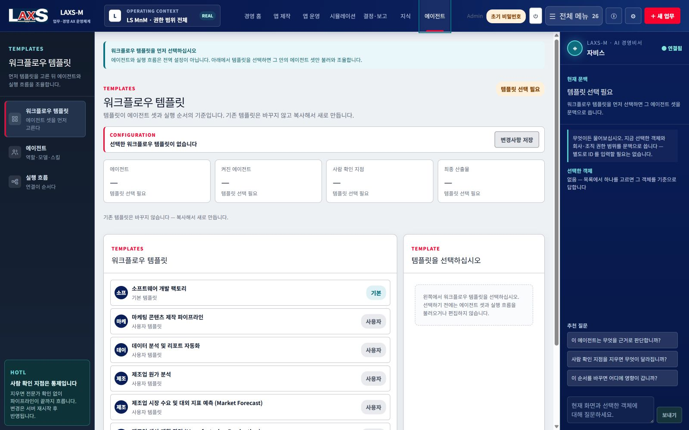

STRATEGIC RATIONALE왜 AX를 회사 운영능력으로 봐야 하는가
LS MnM AX STRATEGY & AX PLATFORM ADOPTION PROPOSAL
LS MnM AX전략 및
AX플랫폼 도입 제안서
현업 사용자의 일하는 방식 개선, 전사 데이터 연계, 전사 실적 시뮬레이션과 의사결정 체계를 하나의 AX 운영모델로 구축합니다.
DOCUMENT MAP
목차
WHY NOW사업 변동성과 현재 판단체계의 간극
AX DIRECTIONLS MnM이 가져가야 할 네 가지 AX 방향
NEW WAY OF WORKING현업 주도의 업무모델 설계와 운영
ENTERPRISE DATA FABRIC기존 시스템과 전사 경영 문맥의 연결
ENTERPRISE PERFORMANCE SIMULATION부서 시뮬레이션과 전사 실적 조합
DECISION SYSTEM질문에서 근거·대안·실행으로 이어지는 체계
AI & AGENT OPERATING MODELAI 경영비서와 역할별 에이전트 운영
OPERATING GOVERNANCEAX Core Team과 현업 Power User
ADOPTION ROADMAP & MEASURES현장 적용부터 그룹 플랫폼까지의 확장
WHY DECISION-CENTRIC AX시뮬레이션 기반 의사결정 시스템이어야 하는 이유
THE NAME AND THE DIRECTIONLAXS의 의미와 시스템 지향점
STRATEGIC CONCLUSIONLS MnM AX 운영체계를 구현할 LAXS-M
01. STRATEGIC RATIONALE왜 AX를 회사 운영능력으로 봐야 하는가
AX의 성과는 도입한 기능 수가 아니라
회사가 스스로 실행하고 판단하는 능력으로 평가해야 합니다.
LS MnM의 AX는 개별 AI 도구를 늘리는 활동이 아니라, 현업의 업무방식과 전사 데이터, 경영 시뮬레이션과 의사결정을 하나의 운영체계로 바꾸는 전략이어야 합니다.
업무별 AI 기능 도입
챗봇·요약·예측 기능이 각각 존재하지만 업무 데이터와 결정이 연결되지 않아 과제 종료 후 회사 자산이 남지 않습니다.
×
외부 개발 중심 반복
현업 요구가 바뀔 때마다 다시 설명하고 개발하면서 회사의 업무지식과 개선 경험이 외부 수행경험으로 흩어집니다.
×
현업 주도 경영 운영체계
현업이 업무 시뮬레이션을 만들고, 그 결과가 전사 데이터와 연결되어 경영 판단·실행·효과로 축적되는 체계를 지향합니다.
지향점
전략적 전환AI를 업무에 덧붙이는 수준에서 벗어나, 회사의 일하는 방식과 판단체계 안에
AX를 내재화합니다.
02. WHY NOW사업 변동성과 현재 판단체계의 간극
사업 변동성은 빨라졌지만, 부서의 판단과 전사 실적은 여전히 늦게 연결됩니다.
원료·환율·금리·에너지·물류의 동시 변동
금속 가격과 환율, 도입 일정, 전력비와 수요 변화가 동시에 움직이며 구매·생산·판매·자금에 연쇄 영향을 만듭니다.
부서별 자료와 가정의 시간차
각 부서의 계획과 분석이 파일·회의자료·개별 시스템에 머물러 같은 질문에 서로 다른 기준시점과 가정으로 답하게 됩니다.
업무 개선 경험이 재사용되지 않음
누가 어떤 데이터와 산식으로 판단했는지, 결정 이후 실제 효과가 어땠는지가 다음 업무와 시뮬레이션에 충분히 이어지지 않습니다.
실적은 정확하지만 사후에 확인
ERP·MES·LPL은 거래와 실행을 정확히 기록하지만, 변화가 향후 손익과 현금에 미칠 영향을 사전에 조합하는 역할은 제한적입니다.
LS MnM의 AX 핵심 질문
“현업의 작은 변화가 전사 손익·현금·납기와 실행 우선순위에 어떤 영향을 만드는가?”에 같은 데이터와 기준선으로 답할 수 있어야 합니다.
03. AX DIRECTIONLS MnM이 가져가야 할 네 가지 AX 방향
LS MnM의 AX는 현업 실행, 전사 데이터, 경영 시뮬레이션과 의사결정을 함께 전환해야 합니다.
현업의 일하는 방식
요청서와 수작업 취합 대신 현업이 업무 앱·에이전트·시뮬레이터를 구성하고 직접 개선합니다.
전사 데이터 연결
기존 시스템의 원천을 존중하면서 조직·업무·데이터 의미와 기준시점을 하나의 문맥으로 연결합니다.
전사 실적 시뮬레이션
구매·재고·생산·판매의 부서 결과를 조합해 전사 손익·현금·납기 영향을 계산합니다.
판단에서 실행까지
근거와 대안을 안건으로 만들고 실행계획·책임·기한·실제 효과를 다시 회사 지식으로 축적합니다.
AX = 회사 운영능력의 내재화기술을 도입하는 전략이 아니라 현업이 만들고, 전사가
연결하고, 경영이 판단하며, 실행 결과로 학습하는 체계를 구축합니다.
04. NEW WAY OF WORKING현업 주도의 업무모델 설계와 운영
현업 사용자는 시스템 개발의 요청자가 아니라 업무모델의 설계자이자 운영자가 됩니다.
05. ENTERPRISE DATA FABRIC기존 시스템과 전사 경영 문맥의 연결
ERP·MES·LPL과 기타 Legacy를 교체하지 않고, 전사 경영 문맥으로 연결합니다.
거래와 실적의 원천은 기존 시스템에 남겨두고, AX 플랫폼은 인증된 데이터 판·조직 권한·업무 의미·관계·기준시점을 공통으로 관리합니다.
기존 투자를 존중
새 거대 시스템을 만드는 대신 검증된 API·DB View·File Contract·MCP로 필요한 범위를 연결합니다.
같은 숫자의 같은 뜻
실적·계획·예측·시나리오를 구분하고 데이터의 출처와 기준시점을 전사 공통으로 유지합니다.
근거가 연결되는 지식
문서를 수동으로 모으는 대신 업무 이벤트와 데이터 관계를 기준으로 필요한 지식 근거를 자동 연결합니다.
06. ENTERPRISE PERFORMANCE SIMULATION부서 시뮬레이션과 전사 실적 조합
부서별 업무 시뮬레이션을 연결해 전사 실적과 현금 영향을 사전에 검토합니다.

업무별 판단
각 부서가 자신이 책임지는 가정과 결과를 검증합니다.
전사 조합
부서 결과를 같은 시점·판·산식으로 조합합니다.
기여도 확인
어느 가정과 부서 변화가 손익·현금에 영향을 주었는지 추적합니다.
대안 비교
기준안·대안·제약조건을 함께 보고 실행 가능한 조합을 선택합니다.
07. DECISION SYSTEM질문에서 근거·대안·실행으로 이어지는 체계
경영자의 질문을 데이터·관계·계산·대안·실행으로 변환합니다.
AI가 숫자를 지어내지 않습니다.AI는 질문을 해석하고 근거를 설명하며 업무를
실행합니다. 경영 수치는 인증된 데이터, 확정된 관계와 산식, 명시된 가정에서 계산됩니다.
08. AI AND AGENT OPERATING MODELAI 경영비서와 역할별 에이전트 운영
AI 경영비서를 넘어, 역할별 에이전트 팀이 업무의 준비·실행·검증을 담당합니다.
전사 문맥의 설명과 안내
경영 현황, 근거, 시나리오와 실행 상태를 사용자 권한 범위에서 설명하고 다음 행동을 제안합니다.
업무 준비와 실행
기획·분석·데이터 준비·앱 생성·검토·보고 역할을 워크플로우 템플릿으로 조율합니다.
책임 있는 사용자 통제
AI는 정해진 권한과 정책 안에서 수행하고, 중요 판단과 외부 발간은 책임 있는 사용자가 통제합니다.

09. OPERATING GOVERNANCEAX Core Team과 현업 Power User
소수정예 AX Core Team과 현업 Power User가 제품·업무·데이터를 함께 운영합니다.
경영 스폰서
전사 우선순위, 부서 간 조정, 운영 범위와 성과기준을 제시합니다.
AX·제품 총괄
전략·제품 로드맵·에이전트 팀·데이터·품질·확산을 통합 관리합니다.
현업 책임 사용자
업무기준과 데이터를 설명하고 앱·업무키트·시뮬레이션을 실제 업무에서 운영합니다.
IT·보안·데이터
연계·인프라·접근권한·보안·복구·운영 안정성을 제품 통제와 연결합니다.
| 운영 리듬 | 주요 활동 | 남는 회사 자산 | 경영 확인 항목 |
|---|---|---|---|
| 현업 일상 | 자료 갱신, 시뮬레이션, 앱·에이전트 개선 | 데이터 계약, 업무 규칙, 실행 이력 | 사용성·정확성·예외 |
| 주간 운영 | 부서 결과 조합, 이슈·대안 검토 | 전사 시나리오, 영향 경로, 개선과제 | 리드타임·재작업·데이터 품질 |
| 월간 경영 | 실적·계획·예측·시나리오 비교 | 결정 근거, 실행계획, 효과 측정 | 손익·현금·납기·실행성과 |
10. ADOPTION ROADMAP AND MEASURES현장 적용부터 그룹 플랫폼까지의 확장
작은 범위에서 시작하되, 전사 운영체계와 확장성을 처음부터 같은 기준으로 설계합니다.
현장 적용
핵심 사용자와 대표 업무 시나리오에서 실제 업무주기·데이터·의사결정을 운영합니다.
전사 운영 확대
업무영역과 사용자를 늘리고 PostgreSQL·복구·모니터링·SLA를 운영규모에 맞게 강화합니다.
그룹내 계열사 확산 적용
공통 코어와 업무키트의 재사용성과 법인별 데이터 격리·특화 범위를 검증합니다.
그룹 AX 플랫폼
그룹 공통 기준과 계열사별 운영모델을 연결하고 제품·IP·조직·정산체계를 확장합니다.
11. WHY DECISION-CENTRIC AXAX 플랫폼이 시뮬레이션 기반 의사결정 시스템이어야 하는 이유
AX의 경쟁력은 답변 생성이 아니라 선택지의 결과를 계산하고 실행으로 연결하는 능력입니다.
PALANTIRDECISION-CENTRIC ONTOLOGY
데이터를 모으는 플랫폼에서
결정을 표현하는 운영체계로
- Ontology가 데이터뿐 아니라 업무 논리·행동·보안을 함께 연결합니다.
- Scenario는 운영 데이터의 분기본에 행동과 모델을 적용해 실행 전 영향을 비교합니다.
- 운영 애플리케이션은 현황 조회에서 멈추지 않고 시뮬레이션과 통제된 실행까지 이어집니다.
공식 자료: Platform Overview · Scenarios · Operational Applications
ENHANSONTOLOGY + AGENTOS
AI가 설명하는 단계를 넘어
판단하고 실행하는 운영체계로
- 기업 데이터·Ontology·에이전트·워크플로우·화면·행동을 하나의 운영체계로 연결합니다.
- 복잡한 업무 논리와 의존관계를 시뮬레이션하고 그 결과를 에이전트 실행으로 전환합니다.
- 수요·재고·생산, 가격·프로모션처럼 다기능 신호를 하나의 의사결정 흐름으로 다룹니다.
공식 자료: AgentOS Overview · From Data to Execution
전략적 시사점AX 플랫폼의 차별성은 LLM이 얼마나 자연스럽게 답하는가가 아니라, 회사의 실제 데이터를 바탕으로 선택지의 결과를 계산하고 책임 있는 결정과 실행으로 전환할 수 있는가에 있습니다.
11-2. LAXS-M DECISION OPERATING MODEL전사 시뮬레이션 중심의 AX 운영 구조
부서별 업무 시뮬레이션을 하나의 전사 경영 시나리오로 결합해야 합니다.
미래 선택의 문제
대시보드는 과거를 설명하지만 경영진은 조건이 달라졌을 때의 결과를 선택해야 합니다.
전사 연쇄 영향
구매 지연은 재고·생산·납기·매출·현금까지 이어지므로 부서별 최적화만으로는 충분하지 않습니다.
확정 가능한 숫자
LLM은 질문과 결과를 설명하고, 경영 수치는 정본 데이터·산식·가정·기준시점으로 계산해야 합니다.
실행 전 안전한 검증
ERP·MES·LPL을 변경하기 전에 별도 시나리오에서 대안의 결과와 위험을 비교해야 합니다.
결정이 회사 자산으로 남는 구조
어떤 데이터와 가정으로 무엇을 선택했고 실제 효과가 어떠했는지를 축적해야 다음 판단의 품질과 에이전트의 실행 신뢰가 함께 높아집니다.
LAXS-M의 지향점LAXS-M은 AI 기능을 모아 놓은 도구가 아니라, 현업의 업무 시뮬레이션을 전사 데이터와 경영 Ontology로 연결해 더 나은 경영 의사결정을 가능하게 하는 AX 경영 플랫폼입니다.
THE NAME AND THE DIRECTIONLAXS의 의미와 시스템 지향점
LS 안에 AX를 심고, 현업과 경영을 하나의 흐름으로 연결합니다.
LAXS = AX embedded in LSLS의 일과 경영에 AX를 내재화합니다.
LAXS - AX at the core of LS현업의 실행과 경영의 판단을 AX로 연결합니다.
LAXS - AX at the core of LS현업의 실행과 경영의 판단을 AX로 연결합니다.

업무 안의 AX
별도 AI 도구가 아니라 사용자의 실제 업무 흐름과 데이터 안에서 작동합니다.
전사의 AX
부서별 개선이 전사 공통 데이터와 경영 시나리오에 연결됩니다.
책임 있는 AX
권한·근거·계산·결정·실행 이력을 유지하며 회사가 통제합니다.
12. STRATEGIC CONCLUSIONLS MnM AX 운영체계를 구현할 LAXS-M
LS MnM의 AX 방향을
실제 운영체계로 구현하는 플랫폼,
LAXS-M을 제안합니다.
현업이 만들고, 전사 데이터가 연결되며, 경영 시뮬레이션으로 판단하고, 실행 결과가 다시 회사 자산이 되는 AX 운영체계를 구축합니다.
LAXS = AX embedded in LSLS의 일과 경영에 AX를 내재화합니다.
LAXS - AX at the core of LS현업의 실행과 경영의 판단을 AX로 연결합니다.
LAXS - AX at the core of LS현업의 실행과 경영의 판단을 AX로 연결합니다.